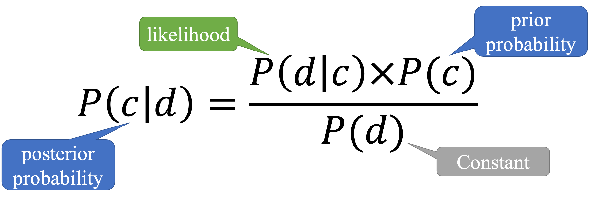
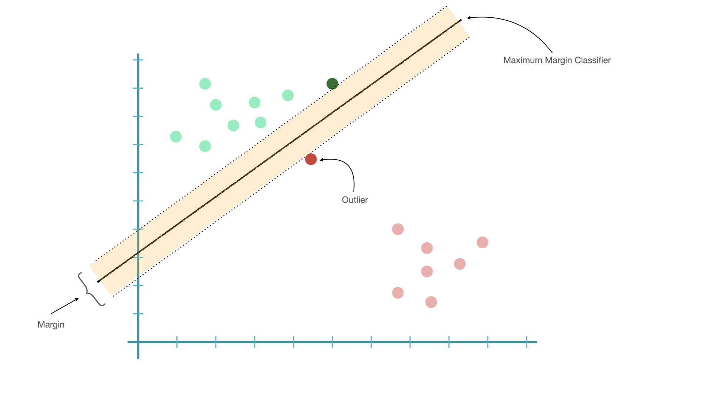

Classification Models¶
Before the era of deep learning, probability-based classifiers are commonly used in many ML NLP tasks.
There are two types of probability-based models:
Generative:
Training is based on the joint probability of the data and the class, i.e., \(P(c,d)\)
Examples: n-gram models, Naive Bayes, HMM, probablistic context-free grammars.
Distriminative:
Training is based on the conditional Probablity of the class given the data, i.e., \(P(c|d)\).
Examples: Logistic regression, maximum entropy models, CRF, SVM, perceptron.
Strengths of discriminative models:
They give high accuracy performance.
They make it easier to include linguistically relevant features.
Other classification models:
Tree-based methods (Decision tree)
Neural Network
Naive Bayes¶

Naive Bayes features the Bayes Theorem:
In naive bayes, given a document \(d\) and a class \(c\), the goal is to find the maximum joint probability \(P(c,d)\). And according bayes rule, the goal (of finding the maximum joint probability) can be reformulated as finding the maximum of the posterior probability of the class, \(P(c|d)\):
Because the \(P(d)\) is a constant for all classes estimation, we can drop the denominator. And now the goal is to find out the class \(c\) that maximizes the posterior probability of the class, i.e., \(P(c|d)\).
In naive Bayes, the probabilities \(P(C=c_i)\) and \(P(X_i|C=c_i)\) are parameters.
The standard, maximum likelihood, approach is to calculate the probabilities using MLE estimators.
For example, for \(P(C=c_i)\), we count the cases where \(C=c_i\) and divide by the sample size, same for conditional probabilities \(P(X_i|C=c_i)\).
To get the Bayesian maximum posterior estimate \(P(C=c_i|X_i)\), we would need to assume prior distributions for the parameters, i.e., \(P(X_i|C=C_i)\).
A document needs to be vectorized through feature engineering into a numeric representation, i.e., a set of n features from the document, \(\{x_1, x_2, ..., x_n\}\)
Given a class \(c\) and a set of n features from the document, \(\{x_1, x_2, ..., x_n\}\), we can denote the posterior probability of each class \(c\) as follows:
Important assumptions in Naive Bayes:
Independence Assumption: Assume features are independent of each other.
Conditional Independence: Assume the feature probabilities \(P(x_i|C=c_i)\) are independent given the label \(c\).
Then we can simply the equation:
Multinomial Naive Bayes is an extension of the Naive Bayes for predicting and classifying data points, where the number of distinct labels or outcomes are more than two.
In Naive Bayes, each feature \(x_i\) of the document is in the form of a probability value of an observed event given the class, \(P(x_i|C=c_i)\)
For example, the probability of observing the word ‘好看’ (\(x_i\)) when the document class is \(c_i\).
Issues of Smoothing
For unseen features in a new document, e.g., \(P(x|c)\), this would render the entire posterior probability of the class to be zero.
Laplace smoothing (Add-one)
Lidstone smooting (Self-defined \(\alpha\) < 1)
Logistic Regression¶
Logistic Regression is also a form of probabilistic statistical classification model.
The model is trained by maximizing directly the probability of the class given the observed data, i.e., \(P(c|d)\).
Logistic Regression is similar to linear regression, whose predicted values are both numeric.
A document needs to be vectorized through feature engineering into a numeric representation, i.e., a set of n features from the document, \(\{x_1, x_2, ..., x_n\}\)
Then the logistic regression models the probability of the class given these observed values:
Each feature \(x_i\) of the document is a function that chracterizes the relevant linguistic properties of the document. These features can be all manually annotated or created automatically.
These features are often in simple forms that are of binary values or numeric values within a range: $\( x_1 = f_1(x_1) = [Contains('好看') ] = \{0, 1\} \\ x_2 = f_2(x_2) = [Contains('絕配') ] = \{0, 1\} \\ ... \)$
But so far the \(y\) is not a probability value yet. It could be any number (\(-\infty\) to \(\infty\)) based on the current linear model. In order to make sure the predicted values of the model are within the range of 0 and 1, the dependent variable \(y\) often needs to be transformed with a so-called link function.
That is, link functions transform the predicted \(y\) into a range more appropriate for linear modeling.
For binary logistic regression, the inverse logit transformation is used, transforming y from the range of \(-\infty\) to \(\infty\) to into probability values ranging from 0 to 1.
And we can re-formulate the model equation as:
The model will then determine the class of the document by choosing the class that maximizes the conditional probability of \(P(c|d)\).
Support Vector Machine (SVM)¶

To understand what SVM is, we probably need to introduce the idea of support vectors.
Given a linearly separable dataset, it is easy to find a hyperplane (in 2D, that would be a line) that separates data into two distinct sub-groups.
The shortest distance between the observations and the threshold (hyperplane) is called the margin.
A hyperplane that gives us the largest margin to make classification is referred to as Maximum Margin Classifier.
Issues with Maximum Margin Classifier:
Maximum Margin Classifier is very sensitive to outliers.
The classifier may be too biased toward the class with fewer outliers.

If we choose a hyperplane which allows misclassifications, we may be able to find a better classifier.
When we allow misclassifications, the distance between the observations and the hyperplane is called a soft margin.
A classifier allowing misclassifications (i.e., based on soft margins) is referred to as soft margin classifier, or support vector classifier.
The observations on the edge and within the soft margin are called support vectors. 
Support Vector Classifiers can deal with observations with outliers and the assumption is that the observations are linearly separable.
What if the observations are not linearly separable in the first place? This is where Support Vector Machine comes in!

Intuition of Support Vector Machine:
Start with data in a relatively low dimension
Move the data into a higher dimension (when no obvious linear classifier found)
Find a Support Vector Classifier that separates the higher dimensional data into two groups

The mathematical tricks of moving data into a higher dimension are the kernel functions. This process is called the Kernel Tricks. SVM uses these kernel functions to find support vector classifiers in higher dimensions.
Polynomial Kernel
Radial Basis Function Kernel (RBF)
SVM has a cost function (C), which controls the compromise of the misclassifications and margin sizes. A smaller C creates a softer (larger) margin, allowing more misclassifications; a larger C creates a narrower margin, allowing fewer misclassifications. A model of larger C often has higher generalizability.
Other Discriminative Models¶
There are many more ways to learn the weights (i.e., \(\beta_i\)) in the discriminative models. Different algorithms may prioritize different link functions to train the model parameters.
In this course, we will not cover all the details of these variants. Please refer to machine learning courses for more details on these algorithms.
Maximum Entropy Model (Maxent)
Maxent is very similar to logistic regression, and differs in mainly its way of parameterization (e.g., feature functions, link functions)
Maxent uses a softmax function to transform values into probabilities.
Perceptron
finds a currently misclassified example, and nudge weights in the direction of its correct classification.
Other Classification Models¶
There are other classification models that are not probabilistic
Decision Tree
It uses a split condition to predict class labels based on one or multiple input features.
The classification process starts from the root node of the tree; at each node, the classifier will check which input feature will most effectively split the data into sub-groups.
Emsemble Methods¶
Bagging
Take subsets of data (e.g., bootstrap samples) and train a model on each subset in parallel
The subsets are allowed to simultaneously vote on the outcome
The final outcome is often an average aggregation.
Example: Random Forests
Boosting
Utilize sequential modeling by improving one model from the errors of the previous model
Often use the output of one model as an input into the next in a form of sequential processing
Example: Gradient boosting machines
Conclusion¶
Feature engineering is a lot more important than algorithm selection.
With good feature representations of the data, usually it does not really mather which machine learning algorithm we choose.
Generally, discriminative models out-perform generative models.
Maybe one day the optimal algorithm can be determined automatically via machine learning as well!!
References¶
NLTK Book, Chapter 6.
Sarkar (2020), Chapter 5.